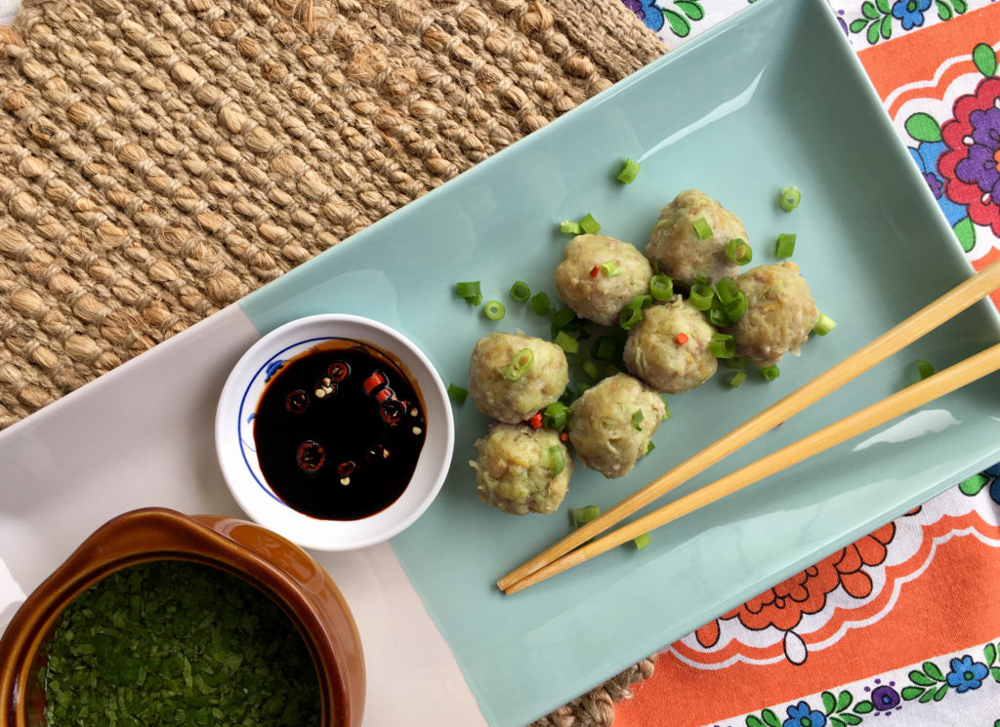

Chayote Dumplings (Niouk Yen – Boulette Chouchou)

This is the most common street food in Mauritius. It can be found everywhere around the island. Just ask for 'ene bol 5' :) Bon Appetit!
Ingredients
- ¼ cup Dried shrimp
- 500 g Chayote approx. 5
- ½ tbsp Salt
- 200 g Minced pork
- ½ tsp Crushed ginger
- 1 tbsp Fish sauce
- 1 tbsp Light soy sauce
- Pepper
- ¼ cup Cornflour alternatively use tapioca starch
- Spring onion chopped for garnish
Steps
- Place dried shrimp into a bowl of hot water and allow to soak for 1 hour.
- Meanwhile, peel and deseed chayote’s then finely grate into a large mixing bowl. Add salt and allow to rest for 15 minutes to draw out liquids..
- Taking one handful of the grated chayote’s at a time, attempt to squeeze out as much liquid as possible by hand and transfer to separate dry mixing bowl. Repeat process one more time.
- Once soaked, drain and finely chop the dried shrimp.
- Add chopped shrimp, minced pork, crushed ginger, fish sauce, soy sauce, pepper and cornflour to mixing bowl with grated chayote and combine well.
- Form dumplings by rolling up mixture into small balls roughly 3cm in diameter by hand. If balls fail to hold then add a little more cornflour to help bind.
- Bring water to boil over medium heat in a pot that will suit steamer. Fill steamer basket with dumplings and steam for 15 to 20 minutes.
- Serve immediately, garnished with spring onion alongside garlic sauce “lasauce l’ail’ and soy sauce chilli as dipping sauce.
Back to Home Page